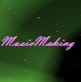

Home
Music in Context
Free Samples
Site Plan
Get Creative
Sometimes creativity requires inspiration and ideas. This website should help give you ideas to use in your own music so that you can make the music you want to make.
Get Started!
Free Samples!